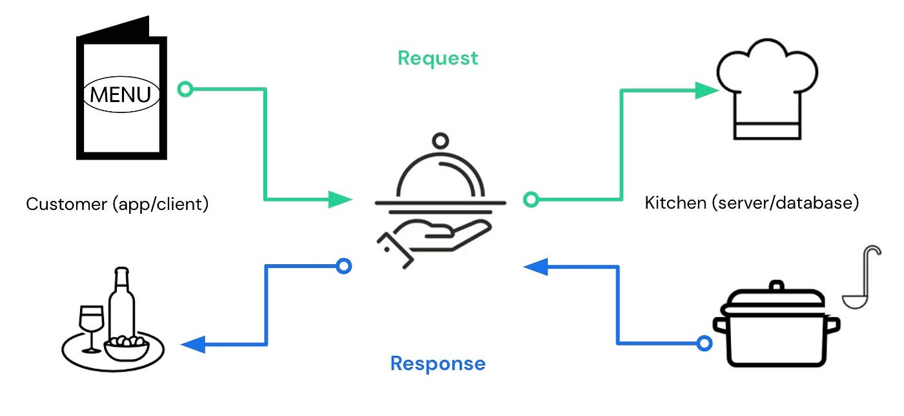
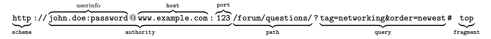
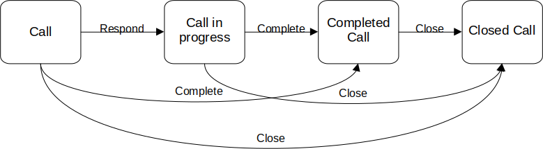

let’s REST
Inside the world of RESTful APIs with Plumber
2025-11-06
Contents
- Introduction to APIs
- Core Concepts: Resources, URIs, and HTTP
- Core Principles of REST
- Building REST APIs with plumber
- Practical Gene Expression API
- Discussion & Activity
1. Introduction to APIs
API Metaphor: The Restaurant Analogy
Imagine you’re in a restaurant placing an order.
- You are the client
- The kitchen is the server
- The waiter is the API

What would happen without the waiter?
- No standard communication: clients talk directly to the kitchen
- Chaotic & inefficient: many clients at once
- Complex clients: each must know kitchen internals
- Error-prone: high chance of mistakes
Before APIs: “Ad-hoc Communication”
- Programs communicated through:
- Manual file transfers
- Custom scripts
- System-specific connections
- Manual file transfers
This led to a core problem:
! Each program had to know the internal details of others - leading to high maintenance, fragile development pipelines, and incompatible systems !
APIs: Standardized interfaces for predictable, scalable, and reliable communication !
How APIs solve this
- Standard interface — clients don’t need internals
- Predictable requests/responses
- Scalable: many clients, one server
- Reliable: fewer errors, easier maintenance
2. Core Concepts: Client–Server, Resources, URIs, and HTTP
Client–Server Paradigm
Most interactions on the internet follow:
- Client sends request
- Server processes
- Server returns response

The client never interacts directly with raw data storage - only through an interface!
Client–Server Paradigm
Examples:
- Loading a webpage
- Querying a hospital database
- Retrieving sequencing results
The client never interacts directly with raw data storage - only through an interface!
Client–Server in Biomedical Context
Examples:
- Viewing imaging results
- Accessing EHR data
- Requesting expression tables
Client = browser/app
Server = hospital system, cloud service, or research database
APIs allow secure, controlled, reproducible access.
Resources and URIs
The first explicit definition of a resource is found in RFC 2396, in August 1998:
The resource is the conceptual mapping to an entity or set of entities, not necessarily the entity which corresponds to that mapping at any particular instance in time.
Resources and URIs
The resource is the conceptual mapping to an entity or set of entities, not necessarily the entity which corresponds to that mapping at any particular instance in time.
Example:
We can have a file Report.pdf at the beginning, and its content might change over time.
The resource itself remains the same, even if the data inside changes.
Resources and URIs
The resource is the conceptual mapping to an entity or set of entities, not necessarily the entity which corresponds to that mapping at any particular instance in time.
In other words:
- The resource is the concept of an entity.
- The entity is the real object or concrete data behind it.
Resources and URIs
Each resource should be identifiable via a Uniform Resource Identifier (URI).
A URI is a string of characters that uniquely identifies a resource, allowing clients to retrieve or manipulate it.
Resources and URIs
A URI is a string of characters that uniquely identifies a resource, allowing clients to retrieve or manipulate it.
A typical URI can indicate how to find or reference a resource in two main ways:
Resources and URIs
A URI is a string of characters that uniquely identifies a resource, allowing clients to retrieve or manipulate it.
- URL (Uniform Resource Locator): indicates where and how to access a resource. To locate it: scheme, authority (host/port), and path.
The query string: optional and allows passing additional data to the resource.
Example of a URL:

Resources and URIs
A URI is a string of characters that uniquely identifies a resource, allowing clients to retrieve or manipulate it.
- URN (Uniform Resource Name): indicates the resource by name, without specifying its location.
Example URN: urn:isbn:0451450523
Resources and URIs
A URI is a string of characters that uniquely identifies a resource, allowing clients to retrieve or manipulate it.
Some more practical examples of URIs: https://en.wikipedia.org/wiki/Albert_Einstein (URL)
https://www.ncbi.nlm.nih.gov/gene/672 (URL)
https://openlibrary.org/books/OL7353617M (URL)
urn:isbn:0451450523 (URN)
urn:uuid:6e5f8a4a-3c57-11eb-adc1-0242ac120002 (URN)
Resource State in REST
A resource state defines which actions are currently allowed for a resource.
Each state permits a specific set of operations and actions may transition the resource to a new state
(e.g., New → In Progress → Completed → Closed).

HTTP Methods & Request/Response
HTTP (HyperText Transfer Protocol) is an application-level, stateless protocol used for communication between clients and servers.
It allows clients to request resources identified by URIs and receive representations of those resources in response.
— RFC 2616, Abstract (datatracker.ietf.org)
The HTTP has methods that allow to manipulate the state of resources:
HTTP Methods & Request/Response
| Method | Purpose | Example |
|---|---|---|
| GET | Retrieve the current state | GET /patients/123 |
| POST | Create a new resource | POST /patients |
| PUT | Replace the resource state | PUT /patients/123 |
| PATCH | Modify part of the resource | PATCH /patients/123 |
| DELETE | Remove the resource | DELETE /patients/123 |
GET method
The GET method is used to retrieve the representation of a resource in its current state.
Client makes a Request:
GET /genes/BRCA1
The client will receive this information from the server and can use it to display, process, or store the resource representation without modifying the resource itself.
POST method
The POST method creates a new resource; the client’s representation is returned with the resource’s URI.
The client receives confirmation and a representation of the newly created resource, which can be used to access or display it.
PUT method
The PUT method updates or replaces an existing resource, modifying the server state; the client’s representation is returned as confirmation.
The client will receive this information from the server and can use it to display, process, or store the resource representation without modifying the resource itself.
DELETE method
The DELETE method is used to remove a resource. It modifies the server state by deleting the resource. The server may return a confirmation or an empty response.
Client makes a Request:
DELETE /genes/TP53
The client receives confirmation that the resource has been deleted. The representation of the resource is no longer available.
2. Core Principles of REST
What is REST?
REST = Representational State Transfer
- Representational: send data as JSON/XML
- State: current information of a resource
- Transfer: exchanged via HTTP
REST ensures: - consistent URLs
- predictable methods
- structured responses
What is an API (REST context)?
An API defines: - what requests clients can make
- how the server responds
- how to structure the request
Examples:
GET /patients/123
POST /expression
APIs hide internal complexity and expose only the interface.
What is an API?
API (Application Programming Interface):
An API, or application programming interface, is a set of rules or protocols that enables software applications to communicate with each other to exchange data, features and functionality.1
Most of the API’s use the client-server paradigm
Statelessness & Error Handling
REST APIs are stateless: - each request contains all needed info
- server stores no session history
This makes APIs scalable.
Standard error codes:
- 200 OK
- 404 Not Found
- 500 Internal Server Error
Error Example in plumber
#* @get /gene
function(name = "BRCA1") {
if (name == "")
return(list(error = "No gene provided", status = 400))
list(
gene = name,
expression = runif(1, 0, 100)
)
}Clients can react automatically based on status.
3. Building REST APIs with plumber
What is plumber?
plumber allows R functions to become API endpoints with simple annotations.
Example:
A complete API with just one comment.
Creating the First Endpoint
Calling /hello returns:
Handling Parameters
Calling /gene?name=TP53 returns:
Why REST APIs Are Crucial for Biomedical Informatics
REST APIs allow:
- interoperability
- reproducible pipelines
- automated workflows
- multi-language access (R, Python, dashboards…)
Without APIs → manual work & error-prone sharing
With APIs → safe and consistent data exchange
4. Practical Gene Expression API
Use Case
Problem: Researchers need consistent access to gene expression data.
Typical workflow: - spreadsheets
- copy/paste
- manual errors
REST API workflow: /expression?gene=BRCA1
→ clean, machine-readable, automatable.
Building the API (GET)
Building the API (POST)
#* @post /expression
function(gene, value) {
list(
status = "success",
gene = gene,
value = value
)
}GET = retrieve data
POST = submit new data
Testing the API
Using curl:
Response:
Testing ensures correctness, reproducibility and reliability.
5. Discussion & Activity
Interoperability in Health: FHIR
FHIR is a REST-based standard for health data.
FHIR defines: - resources like Patient, Observation, Encounter
- endpoints like /Patient/123
Built directly from REST principles.
Class Activity
Design an API endpoint:
- Define a biomedical use case
- Create:
- URI
- HTTP method
- parameters
- JSON response
- URI
Example topics: - drug interaction checker
- protein info lookup
- clinical trial search
Thank You!
Questions?
References
- Plumber: https://www.rplumber.io
- REST Tutorial: https://restfulapi.net
- FHIR: https://www.hl7.org/fhir/
- OpenFDA: https://open.fda.gov/apis/